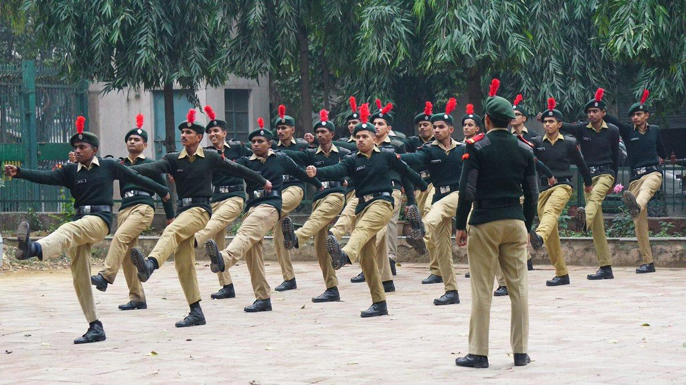
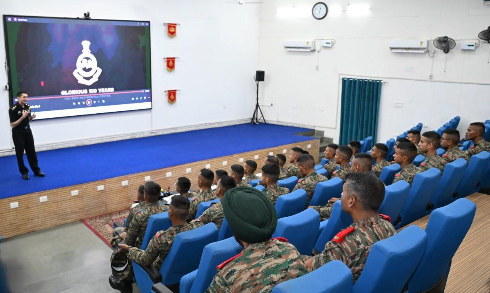
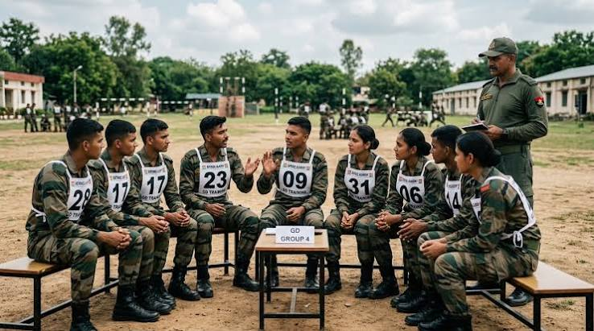

Our Mission
Prepare aspirants for NDA, CDS, AFCAT, NCC Special Entry and SSB with honest guidance and regular practice.
A student community that trains, guides and motivates young people who want to serve in the Indian Armed Forces.
The Defence Aspirant Club (DAC) brings together students who dream of a career in the Army, Navy, Air Force and other uniformed services. We build the habits an officer needs: discipline, fitness, clear thinking and confidence.
Our members prepare together through physical training, group discussions, expert lectures and visits to defence institutions.
Prepare aspirants for NDA, CDS, AFCAT, NCC Special Entry and SSB with honest guidance and regular practice.
Fitness drills, mock GTO tasks, mock interviews, lectures by serving and retired personnel, and visits.
Any student with a sincere interest in the forces. NCC cadets and non-cadets are both welcome.
Our Memories
Moments from our drills, lectures, visits and celebrations.



The National Cadet Corps (NCC) is a youth organisation that develops discipline, leadership and national service. Its motto is “Unity and Discipline.” Cadets learn drill, leadership, weapon training and social service, and may earn A, B and C certificates.
Land force. Entry routes include NDA, CDS, TES, NCC Special Entry and other eligible schemes.
Maritime force. Explore NDA, CDS, officer-entry schemes and other applicable recruitment routes.
Air force. Explore NDA, CDS, AFCAT and other applicable officer-entry routes.
Always verify eligibility, age limits and vacancies through official recruitment notifications.
The Services Selection Board (SSB) assesses a candidate's personality, suitability and officer-like qualities. Practise the different assessment stages with consistency.
Reasoning practice, picture perception and discussion (PP&DT).
Regular practice of TAT, WAT, SRT and self-description exercises.
Group discussions, planning exercises and teamwork challenges.
Discuss your background, motivation and experiences with confidence.
Review, feedback and final assessment.
Lectures and sessions by recommended candidates, serving officers and veterans.
Preparation journey, SSB experience and practical lessons for aspirants.
Life in uniform, leadership and the qualities expected of an officer.
Group activities, interview practice and constructive feedback.
Seeing the forces up close can inspire aspirants. Explore defence institutions, exhibitions and events.
Learn about the National Defence Academy and the training of future officers.
Explore air shows, military exhibitions, naval events and defence displays.
Learn about service life, equipment, careers and the daily responsibilities of personnel.
Celebrate India's national days with patriotism, respect and community participation.
Participate in flag-hoisting ceremonies and honour the national flag.
Develop discipline, coordination and precision through organised drill practice.
Remember national heroes through speeches, discussions and patriotic programmes.
Encourage social responsibility through cleanliness drives and community initiatives.